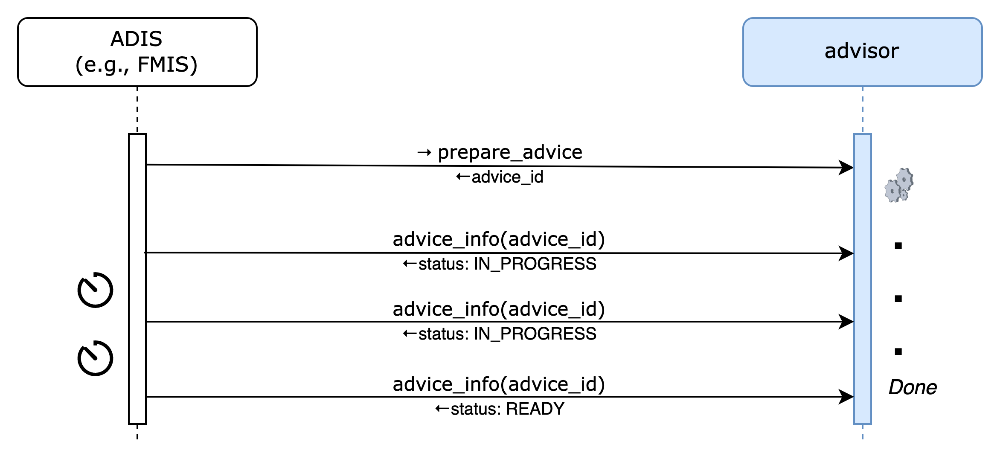

The "sowing_advisor" ATLAS Service Template
Abstract
This document describes the specifications for sowing_advisor services whose purpose is to provide application maps for selected seeds. sowing_advisor services are agnostic of tractors or other equipment; they typically use agronomical algorithms to provide advice on sowing which would then be typically carried out by the ATLAS Equipment Centre.
1 Introduction
sowing_advisor services determine sowing application maps to optimally satisfy field conditions which can later be applied in one or more applications by the ATLAS Equipment Centre on a field.
Farmers may use different sowing_advisor services depending on the specific seeds they use, their budget, the accuracy and the granularity of information they require, etc.
2 Terminology
The key words "MUST", "MUST NOT", "REQUIRED", "SHALL", "SHALL NOT", "SHOULD", "SHOULD NOT", "RECOMMENDED", "NOT RECOMMENDED", "MAY", and "OPTIONAL" in this document are to be interpreted as described in RFC 2119 and indicate requirement levels for compliant implementations.
The notation "[xxx]" (xxx in square brackets) is equivalent to "array of xxx".
When used alone, the term "sowing_advisor" refers to "sowing_advisor ATLAS Service Template". Instead, "sowing_advisor service" is equivalent to "an ATLAS Service implementing the sowing_advisor ATLAS Service Template".
3 Pre-requisites
A thorough understanding in the following is required for
both service consumers or service provider implementors:
- GeoJSON specifications (https://geojson.org/)
- GeoPackage specifications (https://www.geopackage.org/)
4 sowing_advisor Usage Scenarios
The following sections describe some aspects of the use of sowing_advisor. The examples were chosen to illustrate the basic operation of applications using sowing_advisor, not to limit what sowing_advisor may be used for.

5 Service Template API Overview
This section provides a very high-level summary of the sowing_advisor API:
Sowing Monitoring Endpoints
Monitor field
Get field monitoring info
Unmonitor field
Advice Endpoints
Prepare Advice
Get Advice
Cancel Advice
Get Application Info
Implementations of sowing_advisor may require more parameters that are not included in the API. Such implementations MAY provide end-user configuration and management tools in a proprietary user interface.
Within this section, operations are summarised with simple tables:
+--------------------------------------------+
| logical operation name |
+-------------+------------------------------+
| Inputs | <URL parameters or |
| | request body attributes> |
+-------------+------------------------------+
| Outputs | <body attributes> |
+-------------+------------------------------+
Only the most meaningful parameters are discussed in this document. Please refer to the OpenAPI specifications for full details.
sowing_advisor services are not required to handle intense traffic from a single client, such as the one that may result from being directly invoked on user interface interactions in an FMIS, for instance. Implementors MAY generate a 429 TOO MANY REQUESTS error response if the rate of calls exceed some pre-defined quota.
5.1 Sowing Monitoring Endpoints
These functions relate to registering, and unregistering fields for which alerts are desired. sowing_advisor services may provide the means to actively monitor fields and generate alerts when sowing is recommended.
5.1.1 Monitor Field
This endpoint registers a field to be monitored for sowing a particular with the sowing_advisor.
+--------------------------------------------+
| monitor_field |
+-------------+------------------------------+
| Inputs | field urn, notification url |
+-------------+------------------------------+
| Outputs | |
+-------------+------------------------------+
See Sowing Monitoring for details on the monitoring notification process.
5.1.2 Get field monitoring info
This endpoint returns the monitoring info for a field.
+--------------------------------------------+
| monitoring_info |
+-------------+------------------------------+
| Inputs | field urn |
+-------------+------------------------------+
| Outputs | status, [recommendations] |
+-------------+------------------------------+
The status may be one of IN_PROGRESS, CONFIGURATION_REQUIRED, READY, FAILED. In this context, the IN_PROGRESS status indicates that some background processing is still being carried out and that the service is not yet ready to perform active monitoring. The CONFIGURATION_REQUIRED status indicates that the end-user is required to perform some manual configuration on the service's proprietary UI. FAILED indicates that monitoring is not possible. 0 or more alerts may be present only when the status is READY.
If the status is READY then there may be a recommendation to perform a sowing operation on the field.
5.1.3 Unmonitor field
This endpoint cancels monitoring for a field.
+--------------------------------------------+
| unmonitor_field |
+-------------+------------------------------+
| Inputs | field urn |
+-------------+------------------------------+
| Outputs | |
+-------------+------------------------------+
5.2 Advice Endpoints
These endpoints relate to the creation of sowing advices. An advice may be requested to plan and optimize sowing for a particular crop.
5.2.1 Prepare Advice
This endpoint is used to requests an advice to be prepared for the field's crop and the seeds that are at disposition.
the applications that will be carried out (one or more) and their associated products, so that they may optimize advised application maps accordingly.
+--------------------------------------------+
| prepare_advice |
+-------------+------------------------------+
| Inputs | field urn, application |
+-------------+------------------------------+
| Outputs | advice urn |
+-------------+------------------------------+
sowing_advisor services may retrieve any relevant information for preparing advices from the field_data service (e.g., boundaries, current crop, previous applications, etc.). Advices should be prepared by taking the current conditions into account. Advisors have the opportunity to refine their internal recommendations at the actual time the application for the advice is requested (see Get Application Info).
Advice preparation may be a lengthy process. Clients may either poll or request to be notified to determine that the advice is READY (see Advice Preparation).
5.2.2 Get Advice Info
This function returns status information about an advice.
+--------------------------------------------+
| advice_info |
+-------------+------------------------------+
| Inputs | advice urn |
+-------------+------------------------------+
| Outputs | advice info |
+-------------+------------------------------+
In addition to the information submitted when preparing the advice, the advice info also contains a status about the advice preparation which is one of IN_PROGRESS, CONFIGURATION_REQUIRED, READY, FAILED. In this context, the IN_PROGRESS status indicates that some background processing is still being carried out and that the advice is not yet. The CONFIGURATION_REQUIRED status indicates that the end-user is required to perform some manual configuration on the service’s proprietary UI in order to enable the completion of the requested advice.
5.2.3 Cancel Advice
+--------------------------------------------+
| cancel_advice |
+-------------+------------------------------+
| Inputs | advice urn |
+-------------+------------------------------+
| Outputs | - |
+-------------+------------------------------+
Invoking this endpoint causes the advice status to become FAILED. If an advice that is not yet in READY state is cancelled and if a notification URL was provided in the prepare_advice request, a notification MUST be dispatched.
5.2.4 Get Application Info
This endpoint may only be performed on advices whose status is READY. It returns a download URL to the application map and the total estimated amount of seeds needed carry out the application.
+--------------------------------------------+
| get_application_info |
+-------------+------------------------------+
| Inputs | advice id, application ref |
+-------------+------------------------------+
| Outputs | download URL, seed amount |
+-------------+------------------------------+
All values are in the corresponding seed units. Please refer to "Sowing Application File Format" for detailed specification of the downloaded product application map file format.
The status may be one of IN_PROGRESS, CONFIGURATION_REQUIRED, READY, FAILED. In this context, the IN_PROGRESS status indicates that some background processing is still being carried out and that the service is not yet ready to perform active monitoring. The CONFIGURATION_REQUIRED status indicates that the end-user is required to perform some manual configuration on the service's proprietary UI. FAILED indicates that monitoring is not possible. 0 or more alerts may be present only when the status is READY.
For maximum accuracy, the application map is requested in a "just-in-time" fashion by the ATLAS Equipment Centre (or any other consumer) to give an opportunity to advisors to make adjustments to their pre-computed preparation. However, since this information is usually requested just as farmers are about to go out on the field to perform a task, it is important that it is computed in a short time (maximum, few seconds). Any potentially time-consuming processing must be pre-computed and cached internally during the registration and/or preparation stages.
6 Data Formats
This section focuses on the description of binary (file) data formats. Please refer to the sowing_advisor OpenAPI specifications for details on all other payload and parameter descriptions.
6.1 Sowing Application File Format
Seed application data MUST be in GeoPackage (https://www.geopackage.org) format version 1.2 or newer.
+=========================================================+
| TABLE gpkg_contents |
+=====+=============+=====================================+
| ROW | COLUMN | VALUE |
+-----+-------------+-------------------------------------+
| | table_name | "atlas" |
| +-------------+-------------------------------------+
| | data_type | "attributes" |
+-----+-------------+-------------------------------------+
All Atlas GeoPackage files MUST contain an attributes table named "atlas" with a single row and the following structure:
+============================+
| TABLE atlas |
+================+===========+
| COLUMN | TYPE |
+----------------+-----------+
| id | INTEGER |
| type | TEXT |
| participant | TEXT |
| format_version | TEXT |
+----------------+-----------+
and a single row:
+=========================================================+
| TABLE atlas |
+=====+================+==================================+
| ROW | COLUMN | VALUE |
+-----+----------------+----------------------------------+
| | type | "sowing" |
| +----------------+----------------------------------+
| | participant | "<atlas participant id>" |
| 1 +----------------+----------------------------------+
| | application | "..." |
| +----------------+----------------------------------+
| | format_version | "MAJOR.MINOR" |
+-----+----------------+----------------------------------+
Services SHALL validate that the "atlas.participant" field matches the information attached to the authentication context in which the file is uploaded.
If the GeoPackage was generated and uploaded by an Atlas service, then "atlas.application" SHOULD be "<service name>-<service version>", otherwise it MAY contain "<application name>-<application version>". In either case, no validation will be performed.
The "atlas.format_version" field MUST be the version of the sowing_advisor template that is targeted by the client uploading the file. GeoPackage files of a given type are guaranteed to be compatible (no breaking changes) for a same MAJOR version of "atlas.format_version".
A sowing application GeoPackage MUST contain the following additional tables:
+=========================================================+
| TABLE gpkg_contents |
+=====+=============+=====================================+
| ROW | COLUMN | VALUE |
+-----+-------------+-------------------------------------+
| ... |
+-----+-------------+-------------------------------------+
| | table_name | "seeds" |
| +-------------+-------------------------------------+
| | data_type | "2d-gridded-coverage|features" |
+-----+-------------+-------------------------------------+
| | table_name | "application_info" |
| +-------------+-------------------------------------+
| | data_type | "attributes" |
+-----+-------------+-------------------------------------+
If the data_type of the seeds table is "features", then the columns must be as follows:
+=========================================================+
| TABLE seeds |
+=====+=================+=================================+
| ROW | COLUMN | VALUE |
+-----+-----------------+---------------------------------+
| | id | "INTEGER" |
| +-----------------+---------------------------------+
| | geometry | "GeoPackage Geometry" |
| +-----------------+---------------------------------+
| | amount | "amount in seed units (REAL)" |
|-----+-----------------+---------------------------------+
Instead, if the data_type of the seeds table is "2d-gridded-coverage" then it must be defined as follows:
+=========================================================+
| TABLE seeds |
+=====+=================+=================================+
| ROW | COLUMN | VALUE |
+-----+-----------------+---------------------------------+
| | id | "INTEGER" |
| +-----------------+---------------------------------+
| | zoom_level | "INTEGER" |
| +-----------------+---------------------------------+
| | tile_column | "INTEGER" |
| +-----------------+---------------------------------+
| | tile_row | "INTEGER" |
| +-----------------+---------------------------------+
| | tile_data | "BLOB (TIFF)" |
|-----+-----------------+---------------------------------+
Where tile_data is a tiff blob holding Float32 values as per GeoPackage specifications (http://docs.opengeospatial.org/is/17-066r1/17-066r1.html#_storage_formats_and_grid_cell_values).
+============================+
| TABLE application_info |
+================+===========+
| COLUMN | TYPE |
+----------------+-----------+
| id | INTEGER |
| type | TEXT |
| date | DATETIME |
| info | TEXT |
+----------------+-----------+
and a single row:
+=========================================================+
| TABLE application_info |
+=====+=============+=====================================+
| ROW | COLUMN | VALUE |
+-----+-------------+-------------------------------------+
| | type | "sowing" |
| 1 +-------------+-------------------------------------+
| | date | "yyyy-MM-ddTHH:mm:ssZ" |
| +-------------+-------------------------------------+
| | info | "<application_info_json>" |
+-----+-------------+-------------------------------------+
Sowing "application_info.info" is a JSON object serialized as a string, such as:
+-----------------------------------------------+
| { |
| "seed": { |
| "crop_id": "<crop_id>", |
| "variety": "<optional variety name>", |
| "batch_no": "<optional batch number>", |
| "unit": "kg|count", |
| "weight_of_1000": <in kg> |
| }, |
| "amount": <amount> |
| } |
+-----------------------------------------------+
The "crop_id" attribute is defined as per field_data Crop Reference Data. The "weight_of_1000" attribute is the weight in kg for 1000 seeds; it can be used to map units between kg and count. The "amount" attribute is the total amount of seed (in the specified units) sowed in the entire field; it must match the sum of all values in the "seed" table.
7 Access and Authentication
Farmers MUST have an account setup on an advisor service in order to authenticate and access API endpoints. The service implementor is responsible for the creation of accounts; it is not covered in the service template specifications.
Unless specifically documented in the OpenAPI specifications, all API calls must include credentials in form of Bearer authentication (also called token authentication). Clients can obtain an access token on behalf of their user from the service's authorization server (see ATLAS service pairing).
Some of the information held by advisor services may be considered sensitive from a GDPR perspective. The service's authorization server SHOULD request the client's end-user consent at service pairing time in order to deliver an access token.
8 Dynamic Behaviour
The purpose of the diagrams in this section is to illustrate communication patterns, more complex than plain request/response API calls, that involve several interactions and/or asynchronous behaviour. Even though a sequence diagram representation is used, the diagrams are by no means to be interpreted as UML Sequence Diagrams. Specifically, in the spirit of focusing on functional behaviour and readability, error handling is deliberately not covered in the diagrams.
8.1 Sowing Lifecycle
The "Sowing lifecycle" in ATLAS typically operates in a larger context involving three services and an end-user application such as an FMIS which, in collaboration, provide an end-to-end solution from algorithmically computed advices to actual operations performed on a field.

8.2 Sowing Monitoring
There are two methods for determining whether a monitoring request has completed (successfully or unsuccessfully): by polling the monitoring_info endpoint or by notification.
8.2.1 Polling
After requesting a field to be monitored, the client polls monitoring_info endpoint at regular intervals until the returned status is CONFIGURATION_REQUIRED, READY or FAILED.
A CONFIGURATION_REQUIRED status indicates that a user action is required on the proprietary user interface of the advisor. By convention, in case of CONFIGURATION_REQUIRED status, the advisor MAY return a browser URL to the location where a user can provide additional parameters (as required for a specific service implementation). It is the user interface of the client application originating the request to display an appropriate message to the end-user with a clickable link to the provided URL.
8.2.2 Notification
If a notification URL was supplied on the monitor_field endpoint, it will be invoked by the advisor when the monitoring status changes.
Advanced advisors have the ability to monitor conditions on fields in the background and proactively generate nutrient alerts on the notification URL provided at field registration.
Advisors MUST invoke the notification URL supplied by the client with an HTTPS POST command. The payload will be identical to the one that would be returned by a request to the monitoring_info endpoint.
8.3 Advice Preparation
There are two methods for determining whether an advice preparation has completed (successfully or unsuccessfully): by polling the advice_info endpoint or by notification.
8.3.1 Polling
After requesting an advice preparation, the client polls the advice_info endpoint at regular intervals until the returned status is READY or FAILED.
The status may be CONFIGURATION_REQUIRED which indicates that a user action is required on the user interface of the advisor. By convention, in case of CONFIGURATION_REQUIRED status, the service SHOULD return a browser URL to the location where a user can provide additional parameters (as required for a specific service implementation). It is the user interface of the ADIS originating the request to display an appropriate message to the end-user with a clickable link to the provided URL.

8.3.2 Notification
If a notification URL was supplied on the prepare_advice endpoint, it will be invoked by the advisor when the preparation status changes.
 Advisors MUST invoke the notification URL supplied by the client with an HTTPS POST command. The payload will be identical to the one that would be returned by the advice_info request.
Advisors MUST invoke the notification URL supplied by the client with an HTTPS POST command. The payload will be identical to the one that would be returned by the advice_info request.
8.4 General Comments on Notifications
Services must provide best efforts to deliver notifications. A notification is considered successful if the target returns an http result code 2XX.
Errors may occur during notification delivery. Depending on the type of error, services must react in different ways:
i) Network error - the connection to the client's host (from notification URL) cannot be established. The service MUST retry a certain number of times. The number of retries and possible backoff strategy is left at the discretion of the service implementer.
ii) Server errors (5XX result code) - these errors are potentially transient. The same strategy as for Network errors SHOULD be applied.
iii) Client errors (4XX result code) - typically when the notification URL is invalid, or the authentication is invalid/expired. 4XX errors should never be sent for transient client-side conditions and therefore services SHOULD NOT attempt retries.
Upon an excessive number of errors, services MAY give up further notification attempts. In that case, clients can only retrieve completion information via polling.